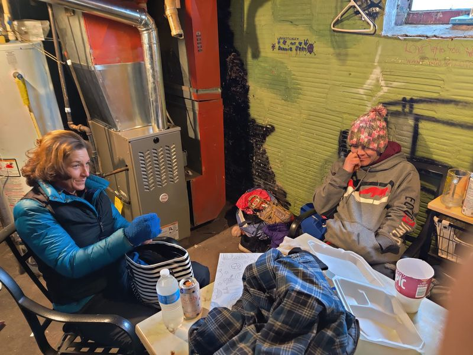

Mobile uploads
What a difference a few hours makes. We went from having a freezing cold house to a toasty warm house.
Our brand new furnace is already in.
If there is one message I want you to know it is that PEOPLE ARE GOOD.
I found out we needed a new furnace at about 8am this morning. It's now 1:45 and we have a new furnace. That's great. But it's not the best part.
I told you about this situation and put up a fundraiser to raise the $2500 for the furnace. And just look what you did in that short amount of time:
https://donorbox.org/new-furnace-for-the-houseless-movement-house
You fill me with hope and love and faith. You are awe inspiring. Thank you.